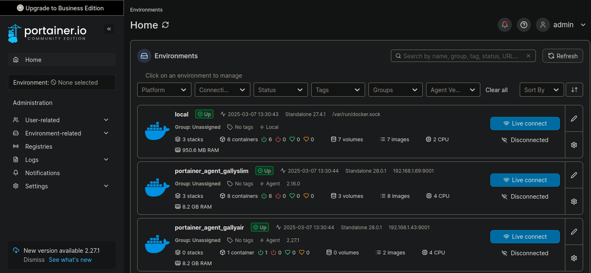
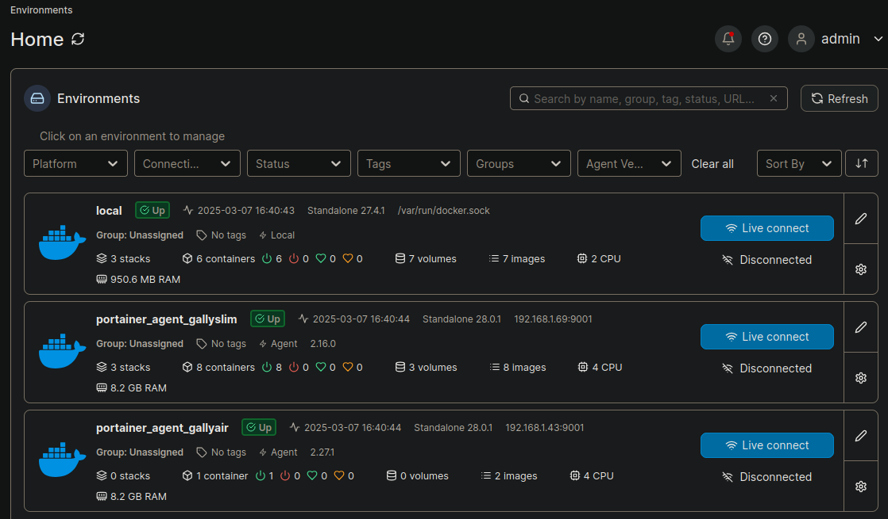
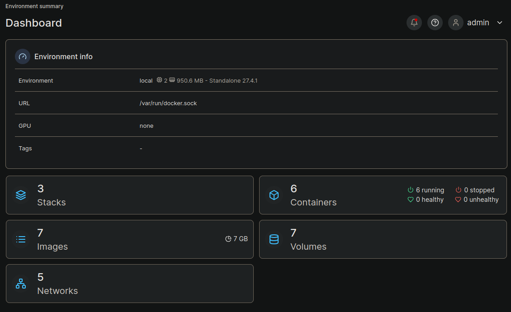
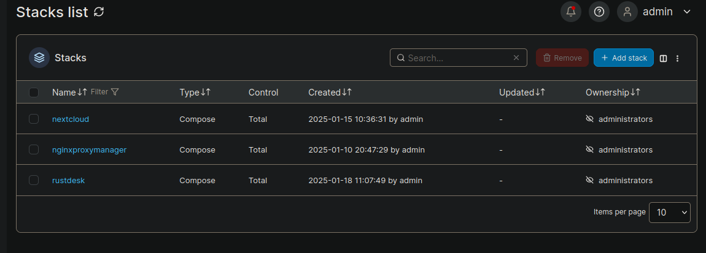
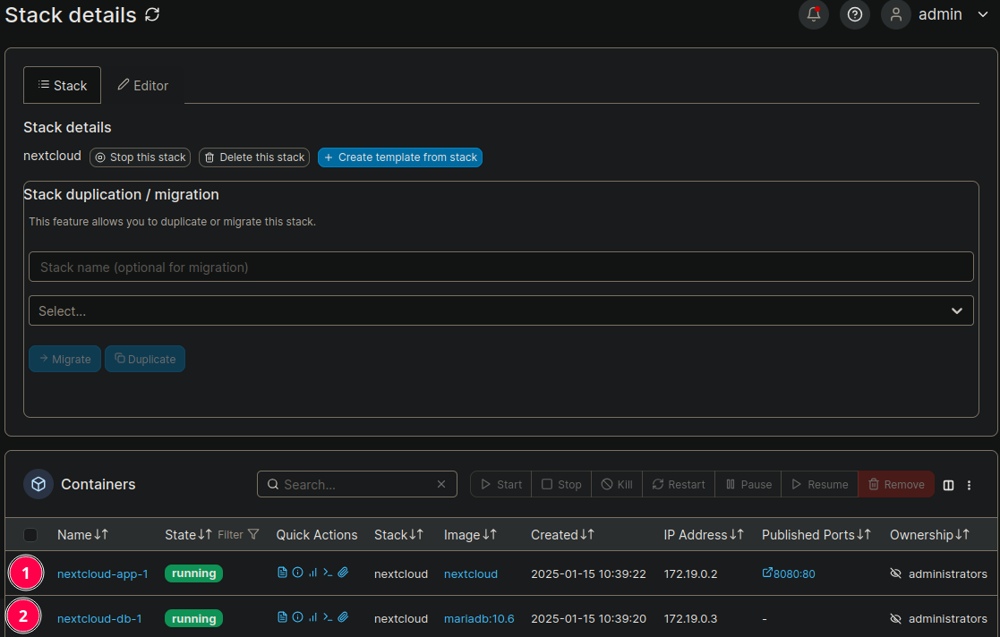

Portainer
Le gestionnaire de docker en mode WebUI
Portainer permet de manager vos containers docker , et de connecter plusieurs environnements.
On constate qu’il y a 3 environnements de connecter.
C’est très pratique , ça fonctionne très bien, cependant prennez l’habitude de créer un dossier par contenaire , afin d’y garder des notes , scripts , model de votre docker-compose , et éventuellement des sous dossiers si vous voulez les monter dans votre contenaire.
Exemple:
mkdir -p mon_docker/{data_mon_docker,config_mon_docker,logs_mon_docker}
Portainer est lui même un docker , pour l’environnement local , portainer va utiliser le domain socket unix ( interprocess communication IPC ) , et qui va exploiter un agent pour les environnements distant , agent qui est également un docker.
De la même manière que portainer , l’agent utilise le domain socket unix pour ensuite exposer le service via un socket IP.
C’est un peu magique .
Dashboard principal
Au premier coup d’œil , vous connaissez:
- le nombre de NODE
- leurs CPU
- leur RAM
- le nombre d’images par nœud
- le nombre de dockers
- leurs états
Noeud principal
Ici portainer CE est installé sur une petite VM debian. Le dashboard nous donne un récapitulatif de la machine hôte (environnement local).
- le nombre de stacks , ce qui correspond aux Docker-compose
- le nombre d’images que vous avez récupéré
- le nombre de réseaux
- le nombre de containers et leur état
- le nombre de volumes
Les stacks
Stacks correspond à docker compose qui permet de lancer plusieurs dockers en même temps, ou de lancer une stack web , soit l’application web et sa db.
Super pratique!! c’est ici que vous placez vos docker-compose , mais surtout ça permet de les modifier à chaud .
En ligne de commande , il faudrait se placer dans le répertoire du projet , modifier
le docker-compose , puis le relancer avec docker compose up -d .
compose est un plugin de docker , up permet de lancer la stack , -d en mode détaché et le point signifie qu’il s’agit du répertoire dans le quel nous sommes situé.
Jetons un œil à Nextcloud :
Nous constatons qu’il y 2 dockers , 1 pour l’application, et 2 pour sa db .
Nous voyions que l’ont peut accéder à un éditeur , que nous pouvons stopper et supprimer la stack.
La partie du bas correspond à l’interface des containers , on verra cela plus loin.
L’éditeur de stack

Je vais modifier 2 ou 3 éléments puis relancer la stack . Ce n’est pas un docker que j’utilise vraiment . Il peut bien servir d’exemple .
Et , je vais détailler , un peu le fichier.
volumes:
nextcloud:
db:
services:
db:
image: mariadb:10.6
restart: always
command: --transaction-isolation=READ-COMMITTED --log-bin=binlog --binlog-format=ROW
volumes:
- db:/var/lib/mysql
environment:
- MYSQL_ROOT_PASSWORD=P@ssw0rdC0mpliqu3
- MYSQL_PASSWORD=changeme
- MYSQL_DATABASE=nextcloud
- MYSQL_USER=nextcloud
app:
image: nextcloud
restart: always
ports:
- 8080:80
links:
- db
volumes:
- nextcloud:/var/www/html
environment:
- MYSQL_PASSWORD=changeme
- MYSQL_DATABASE=nextcloud
- MYSQL_USER=nextcloud
- MYSQL_HOST=db
Une chose importante à savoir , le format de fichier est du yaml ou yml.
L’indentation est très précise, et ne supporte pas la tabulation, il faut faire des espaces, sinon vous aurez des erreurs.
Par exemple , copiez collez le contenu dans un éditeur de texte , comme NotePad++, mettez l’indentation automatique , et détecter depuis le contenu , NP++ devrait détecter les espaces.
De plus, il fallait préciser la version de la syntaxe du compose , mais c’est terminé , à priori , c’est figé.
volumes
volumes:
nextcloud:
db:
On voit une première déclaration volumes . C’est ici que l’on déclare explicitement
le ou les nom/s des volumes que l’on va utiliser .
Ils sont situé dans /var/lib/docker/
tree -L 1 /var/lib/docker/
/var/lib/docker/
├── buildkit
├── containers
├── engine-id
├── image
├── network
├── overlay2
├── plugins
├── runtimes
├── swarm
├── tmp
└── volumes
11 directories, 1 file
On nomme les volumes, car au début des dockers , la légende racontait que les données étaient volatiles . Ce qui était évidemment faux , seulement à chaque lancement ; puis destruction; puis re lancement d’un docker , un nouveau volume se créait , avec une suite de nombre aléatoire .
Alors, forcément à lancer, puis détruire à la chaîne des dockers, fatalement , le user ne pouvait plus faire de docker inspect mon_docker_détruit pour savoir quel volume était rattaché à quel docker; puisque le docker était détruit, mais les volumes étaient bien sagement dans /var/lib/docker/volumes.
Si on nomme un volume:
── volumes
├── backingFsBlockDev
├── metadata.db
├── nextcloud_db
├── nextcloud_nextcloud
├── nginxproxymanager_letsencrypt_data
├── nginxproxymanager_npm_data
├── portainer_data
├── rustdesk_hbbr_data
└── rustdesk_hbbs_data
On peut bien plus facilement les réutiliser , qu’une suite de nombre . On remarque également , que le nom est préfixé par le nom de la stack .
C’est malin.